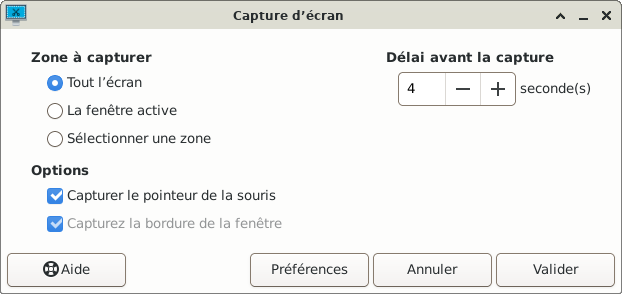
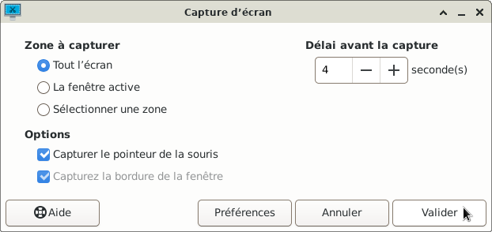
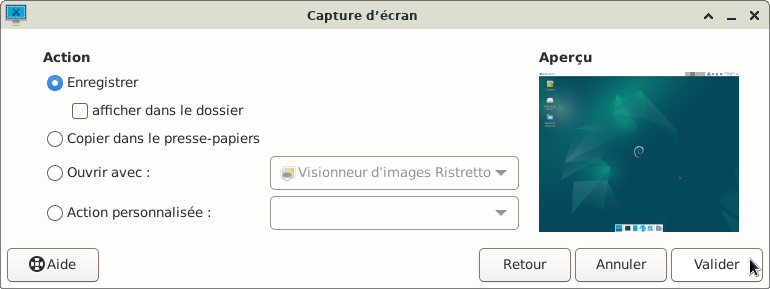
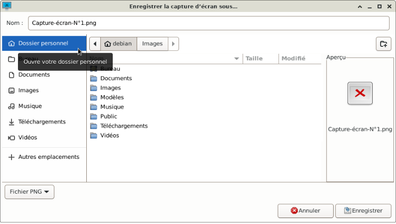
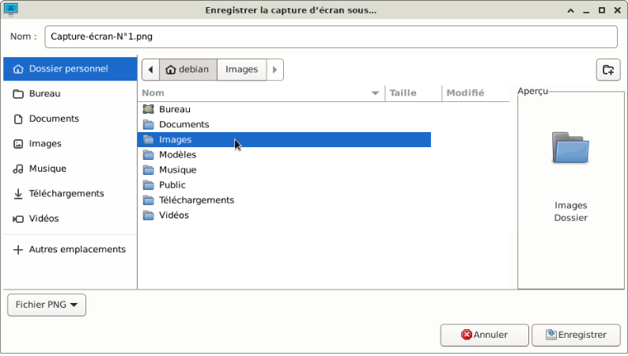
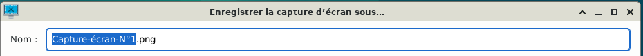
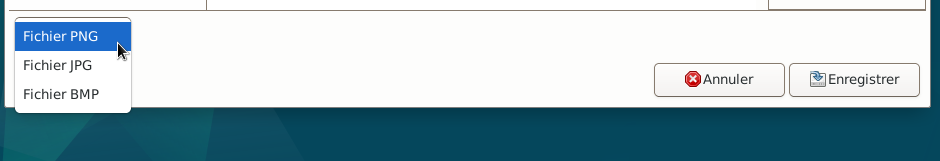
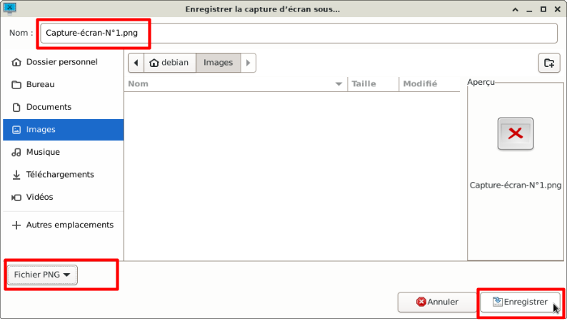

GLICD
Capture de tout l'écran :
Retour au chapitre précédent
- Simple clic > Tout l'écran
Simple clic > Capturer le pointeur de la souris
Délai avant la capture : 4 secondes (simple clic à l'aide des boutons « + » ou « - »)

- Simple clic > Valider

- Quatre secondes plus tard la capture de tout l'écran est prise.
La fenêtre « capture d'écran » s'ouvre
Sous Aperçu : Visualisation en miniature de la capture d'écran
Sous Action : « Enregistrer » le rond est bleu. Le choix est donc d'enregistrer la capture d'écran
Simple clic > Valider

- Une fenêtre apparaît : Enregistrer la capture d'écran sous...
Simple clic > Dossier personnel

- Enregistrer la capture d'écran au format d'image souhaité avec le nom choisi et dans le dossier désiré.
Exemple : Enregistrer la capture d'écran dans le dossier « Images »
Double clic > Images

- A l'aide de la souris faire une sélection (qui sera surlignée en bleu) puis saisir le nom du fichier.
Dans cet exemple, le nom qui a été saisi est « Capture-écran-N°1 »
le « .png » est le format de l'image par défaut (ne pas le sélectionner).

- Si besoin, changer le format de l'image
Simple clic > Fichier PNG (en bas de la fenêtre)
Puis, simple clic sur le format d'image souhaité

- Simple clic > Enregistrer

- La fenêtre d'enregistrement disparaît
- Si besoin, pour retrouver l'image de la capture d'écran qui se trouve dans le dossier Images
Se rendre au chapitre :
Gestionnaire de fichiers avec Thunar :
Se déplacer dans le gestionnaire de fichiers
Retour au chapitre précédent

Retour
Informations sur le logiciel libre et
Merci.
Marques déposées :
Ce site ne fait pas partie de Debian, n'est pas produit par le projet
Debian, ni approuvé par le projet Debian.
Ce site n'est pas affilié à Debian. Debian est une marque déposée appartenant
à Software in the Public Interest, Inc.
Contribuer :
Ce site ne fait pas partie de XFCE, n'est pas produit par le projet
XFCE, ni approuvé par le projet XFCE.
Ce site n'est pas affilié à XFCE.
Ce site est juste réalisé par un passionné.